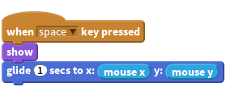
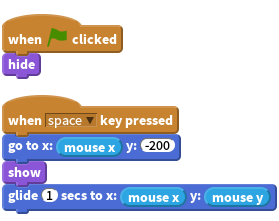
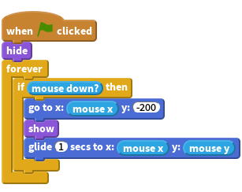
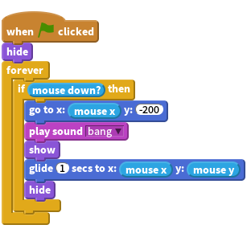
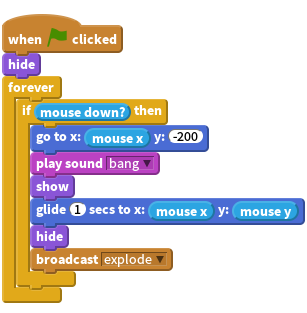
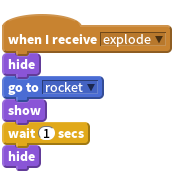
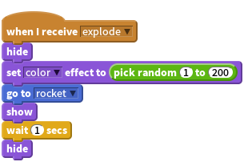
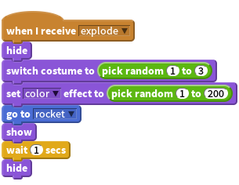
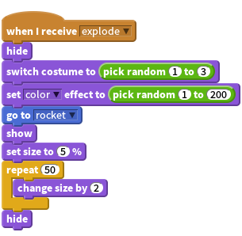
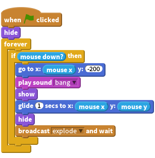

Introduction
In this project, we’ll create a fireworks display over a city.

Step 1: Create a rocket that flies towards the mouse
Let’s import the different pictures for the game
Activity Checklist
- Start a new Scratch project. Delete the cat by right clicking it and clicking Delete.
- Replace the backdrop with outdoor/city-with-water.
- Use the
Upload sprite from filebutton to add a Rocket sprite to the project (use the Resources/Rocket.png costume). Make the rocket hide when the green flag is clicked.

Now we want to make the rocket move towards the mouse when the mouse is clicked. Add a
when space key pressedcontrol block, and under this make the rocket appear and glide towards the mouse.
Test Your Project
Click the green flag, place your mouse over the stage and press the space bar.
- Does the rocket appear and move to the mouse?
- What happens if you move the mouse and press space again?
Activity Checklist
Fireworks don’t tend to fly from side to side, so lets make sure it always glides towards the mouse from the bottom of the screen. Before we show the rocket, use the
go toblock to tell it to move to below the bottom of the screen, but stay in the same place horizontally.
Test Your Project
Click the green flag, place your mouse over the stage and press the space bar.
- Does the rocket fly towards the mouse from the bottom of the screen?
- What happens if you move the mouse and press space again?
Activity Checklist
Finally, let’s make this work by using the mouse button instead of the space bar. To do this, we can wrap our script in a
forever if mouse downblock, then swap thewhen space key pressedcontrol block forwhen flag clicked. And last but not least make sure the rocket is hidden when everything starts up.
Test Your Project
Click the green flag, and then press the mouse button over the stage. Click again at another point.
Things to try
- Try making some rockets a little slower or faster than others.
- Try changing where the rocket moves to before gliding towards the mouse to make it arc a little.
Save your project
Step 2: Make the rocket explode
Activity Checklist
The first step to make the rocket explode is to make it play a ‘bang’ sound (Resources/bang.wav) before it starts moving, and then hide itself once it reaches the mouse. To import a sound go to the Sounds tab and click the
Upload sound from filebutton.
Next, make the rocket broadcast a new message when it explodes. We’ll listen for this message later on.

Test Your Project
Click the green flag. Make sure the rocket plays a noise and hides when it reaches the mouse.
Activity Checklist
- Create new sprite from File, Resources/firework1.png
When it receives the explode message, it should hide itself and then move to the position of the rocket using the go to block, show itself, and then vanish again a second later.

Test Your Project
Send another rocket flying.
- Does it get replaced with the explosion graphic when it explodes?
- What happens if you hold the mouse button down whilst moving the mouse? (Don’t worry, we’ll fix this later on).
Save your project
Step 3: Make each explosion unique
Now we can make each explosion even more unique by using the
set color effectblock, and have it pick a random colour between 1 and 200 before showing it.
Test Your Project
Click the green flag. Does each explosion have a different colour?
Activity Checklist
Lets add a number of different possible explosion graphics as costumes, using Resources/firework2.png and Resources/firework3.png, and switch between them for each rocket, again before showing it.

Test Your Project
Click the green flag.
Does each rocket have a different explosion graphic?
Activity Checklist
Finally, Let’s make the explosion get bigger after the rocket explodes! Instead of waiting a second, set the size of the sprite to 5% before we show it, and then once it’s shown, increase the size by 2 fifty times, using a
repeatblock.
Test Your Project
Click the green flag.
- Does the explosion graphic spread out from the centre of the rocket and slowly grow?
Things to try
- Why not try making each explosion more unique by altering the size and speed of growth for the explosion.
Save your project
Step 4: Fixing the Broadcast Bug
Remember earlier we had a bug involving holding down the mouse button? This occurs because when the rocket broadcasts its explosion, it will immediately repeat the if loop and move the rocket back to the bottom of the stage. This happens before the explosion has moved to the position of the rocket.
Activity Checklist
To fix this, we can replace the broadcast block with a broadcast and
waitblock. This way, the loop will not repeat until the explosion finishes exploding.
Test Your Project
Click the green flag, hold down the mouse button and move the mouse around the stage.
- Does the explosion graphic appear in the right place and at the right time?
Save your project
Well done, you’ve finished! Now you can enjoy your game!
Don’t forget you can share your game with all your friends and family by clicking on Share on the menu bar!